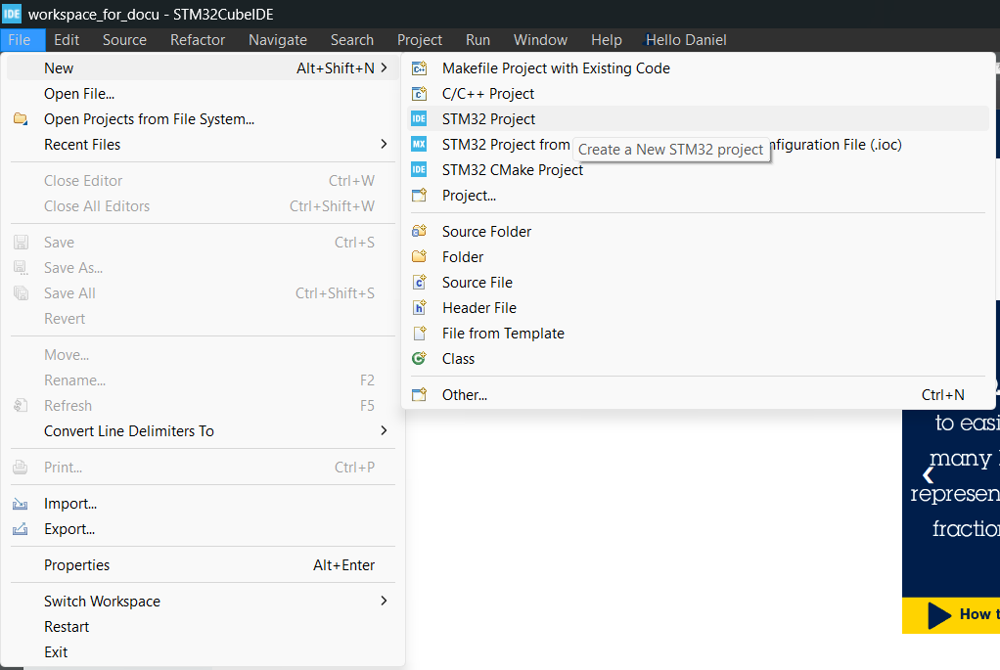

|
Shellminator V3.0.1
Simple Terminal
|
|
Shellminator V3.0.1
Simple Terminal
|
Before we get started with anything, we need to install this software package into our preferred development environment. We've gathered the most popular development environments and prepared a short guide for you to ensure a smooth start to this adventure.
Let's start with the installation guide for the Arduino environment, as we believe this is the simplest one of all. First, you will need the Arduino IDE. This software is the heart of the Arduino ecosystem. Next, you'll need an Arduino board that has enough resources to meet your goals.
To help you find the most suitable board, we've created a table for you to easily choose one.
If you're just getting acquainted with this software, we recommend choosing a slightly more modern microcontroller, such as the Raspberry Pi Pico or the ESP32. We suggest this because these platforms have much more memory than, for example, an older Arduino Nano. This extra memory allows you to try out all the functions without needing to optimize right away. We're offering this friendly advice to help you avoid any additional distractions while you're learning.
Once you've installed the Arduino IDE, the next task is to install Shellminator. You can find detailed instructions here. Please make sure to always strive for using the latest version to ensure you have the most stable version on your computer.
There are, unfortunately, times when the Library Manager is not available. This can happen for various reasons, such as wanting to install the library offline, or working in a corporate environment where the paths used by the Arduino IDE for installation are blocked. But don't worry! The libraries can still be installed in these situations, please follow the instructions from here.
We absolutely love the STM32 family of microcontrollers—they're one of the most flexible and versatile options available today. And it's not just the hardware that's great; ST also provides a solid software ecosystem to support development.
However, it's important to keep in mind that this flexibility comes at a cost. While the Arduino IDE is designed to be beginner-friendly, Cube IDE can feel a bit overwhelming at first. Not because it's a bad tool—far from it! The challenge is that it comes packed with a huge number of development tools, which can make it hard to know where to start.
But don't worry! We’re here to help you set up a basic configuration.
First, you'll need to download and install Cube IDE (unfortunately, this requires registration). During installation, make sure to install all the necessary drivers to avoid connection issues later.
If you're new to STM32, we strongly recommend getting a Nucleo board. The Nucleo series was designed by ST specifically for learning and prototyping. It's affordable, widely available, and—most importantly—it comes with an integrated debugger. This built-in debugger makes the learning process way easier and saves you from needing additional hardware to start programming and debugging your STM32 projects.
Here's the English translation with a friendly and beginner-friendly tone:
Once you’ve installed STM32 Cube IDE, the first step is to open the IDE and choose a workspace folder. This can be anywhere on your computer, just make sure it's a location you’ll remember. A single workspace can hold multiple projects, so you don’t need to create a new workspace for every project. For now, we’ll stick with the default settings. Click Launch to open the workspace.
When the IDE opens, you'll need to log in to your ST account. You can do this by navigating to the myST menu in the top menu bar.
Once logged in, it’s time to create a new project. Navigate to:
File -> New -> STM32 Project

Now, you need to choose your board or microcontroller:
For this guide, we’ll be using a Nucleo-F746ZG, so we’ll select it from the Board Selector.
In the next window, you’ll set up the project name and programming language. You'll also choose:
Once everything is set, click Finish.
If Cube IDE asks whether it should configure peripherals in default mode, choose "Yes". This will automatically set up the Nucleo board as intended by ST, so you won’t have to manually check the schematics to figure out pin assignments.
You might also see a prompt asking: **"Open Associated Perspective?"**
Click Yes, as we’ll need to tweak some settings in the graphical configurator.
The Graphical Configurator in CubeMX makes it easy to set up different microcontroller features. There are plenty of YouTube and Udemy tutorials covering this tool, and we highly recommend this series: [LINK].
For now, we’ll set up a UART interface so we can communicate with our STM32. The rest of the features are up to you to explore!
Since most STM32 chips have multiple USART peripherals, your Nucleo board might be using USART2 or USART3 for this purpose. Check the board documentation to confirm. In our case, we’re using USART3.
To avoid data loss when receiving data, we need to set up DMA (Direct Memory Access).
DMA is important because it allows incoming data to be transferred without CPU intervention, preventing data loss and ensuring non-blocking operation**—which is crucial for **Shellminator.
If your settings match the ones below, everything should work fine:
At this point, we have successfully generated the base code for our microcontroller. However, we still need to make a few modifications.
Even though we configured the project for C++, the code generator still creates a main.c file instead of main.cpp. To fix this, we need to rename main.c to main.cpp.
Since main.c contains both auto-generated and manually written code, it's crucial to avoid losing any changes. Before regenerating the code:
This ensures that both your custom changes and the new auto-generated code are preserved in the correct file.
If everything was done correctly, the project should compile successfully. You can build it by selecting:
First, download the latest release of Shellminator. Once downloaded:
Next, we need to make sure the Shellminator source files are properly included in our project:
Shellminator comes with extra files that we don’t need for this project. These are located inside the extras folder, and if left included, they might cause compilation errors.
To exclude them from the build process:
If you try to compile now, you’ll likely get an error because the project is missing Stream.h. This happens because Shellminator is designed to be compatible with the Arduino ecosystem, and by default, it expects certain Arduino libraries —like Stream —to be available.
Right now, our STM32 environment doesn’t include this functionality. But don’t worry! We’ve prepared everything for you, and you can easily add the missing libraries as part of a simple software package installation.
Similar to how we set up Shellminator, you need to add the SerialDriverForSTM32 package to your project. It’s best to download the latest release. Once downloaded, copy the software into your project’s Drivers folder.
In the SerialDriverForSTM32 folder, you’ll find two important directories: src and extras. You need to add these to your project separately using Right Click -> Add/Remove include path…. In the pop-up window, make sure to check all your targets.
Now, if you try to build the project, it should compile without errors (though you might see some warnings—if you do, feel free to open an issue! Our goal is to get everything compiling warning-free too. 🙂)
In your main.cpp, you need to include the required headers:
First, you need to create a Serial object. Since we configured USART3, we’ll use huart3 in the constructor and name the object usart3.
Next, create a Shellminator object—let’s call it shell for now. The constructor will take the usart3 object we just created.
You can initialize the usart3 object using the begin method. Similar to the Arduino implementation, you need to specify the baud rate. We recommend 115200, as it’s fast enough for modern terminals.
Once initialized, it's a good idea to clear the terminal interface using shell.clear(). Then, start the shell using shell.begin("stm32"). (The string can be anything you like.)
Finally, inside the infinite loop, call shell.update() in every iteration.
If everything is set up correctly, your project should compile without issues. Once it compiles, you can run the code on your Nucleo board using the Run button in the Run tab.
To interact with your board, you’ll need a terminal emulator. If you’re not familiar with terminal emulators, don’t worry! We’ve detailed everything you need to know on the Usage page. Since CubeIDE has a built-in terminal emulator, it’s worth checking out that section as well.
If you need more information about how the Shellminator API works, and what can it do, please check the Examples.